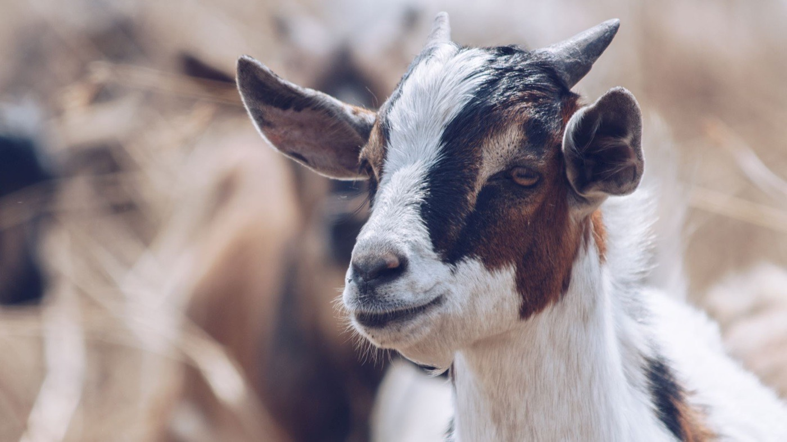
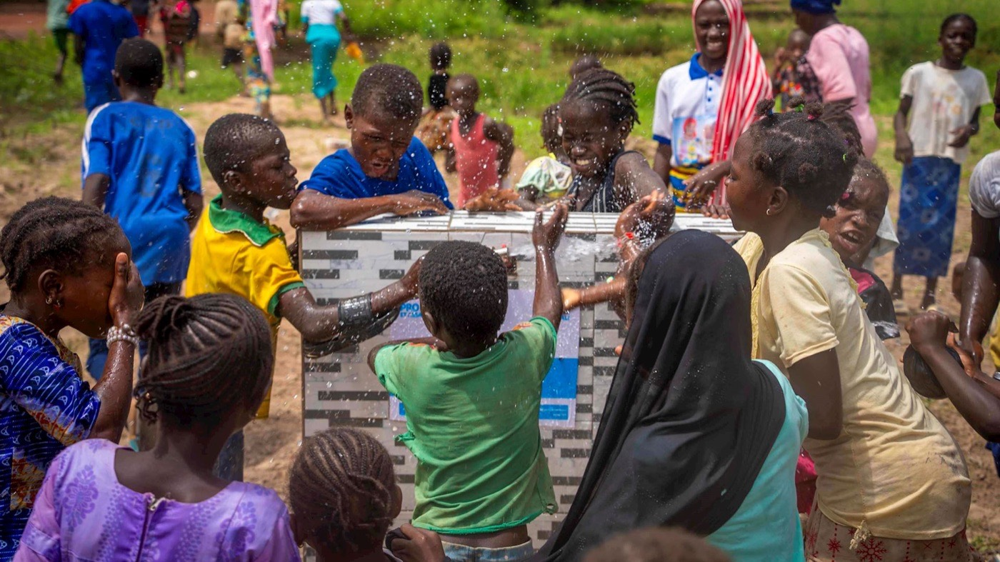
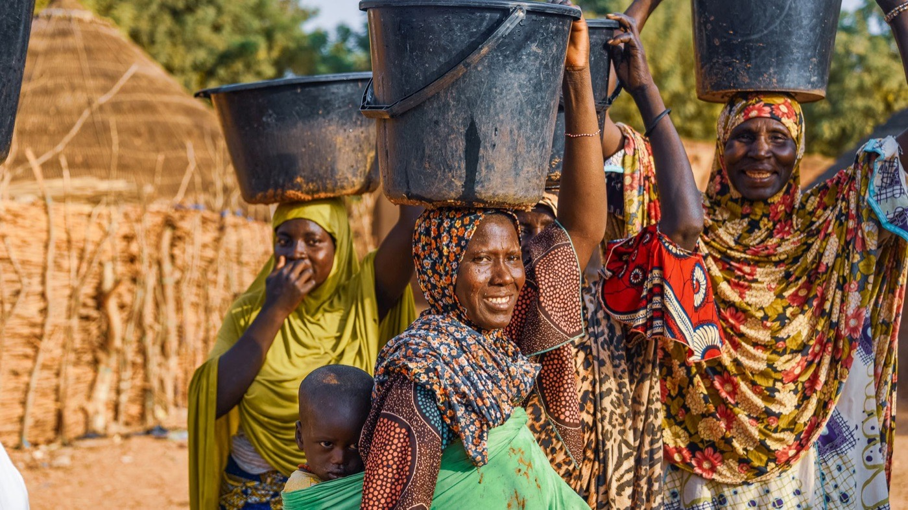

- Bêtes achetées sur place, sacrifiées après la prière
- Compte rendu de distribution avec photos
- Reçu fiscal immédiat : 70 € vous coûtent 23,80 €
Quel est le prix du sacrifice de l'Aïd par pays ?
Un sacrifice au prix local, sans intermédiaire. Le montant suit le cours du bétail dans chaque pays ; la réduction d'impôt de 66 % s'applique à tous.
| Pays | Animal | Prix | Coût après impôt | Bénéficiaires prioritaires | |
|---|---|---|---|---|---|
| Mali, Niger, Gambie | Mouton ou chèvre | 70 € | 23,80 € | Villages ruraux, familles d'orphelins | Choisir |
| Somalie | Chèvre | 75 € | 25,50 € | Camps de déplacés de la sécheresse | Choisir |
| Bangladesh, Sri Lanka, Inde | Part de bœuf | 90 € | 30,60 € | Quartiers pauvres, familles rohingyas | Choisir |
| Pakistan, Cachemire | Mouton | 140 € | 47,60 € | Familles sinistrées des inondations | Choisir |
| Yémen | Mouton | 180 € | 61,20 € | Déplacés, veuves, orphelins | Choisir |
| France | Mouton | 320 € | 108,80 € | Bénéficiaires de nos maraudes et de La Fourchette Fraternelle | Choisir |
| Là où le besoin est le plus grand | Au choix de nos équipes | 70 € | 23,80 € | Affectation selon les urgences du moment | Choisir |
Prix 2027 indicatifs, à confirmer par l'équipe avant publication : ils suivent le cours du bétail dans chaque pays. Une part de bœuf correspond à un septième de la bête.
Du marché au bétail à la table des familles, en trois jours
Nos équipes locales connaissent les éleveurs, les bouchers et les familles. Chaque étape est documentée, et vous recevez le bilan.
Achat local
Les bêtes sont achetées à des éleveurs du pays, quelques jours avant l'Aïd : l'économie locale en profite et les critères d'âge et de santé sont vérifiés sur place.
Sacrifice après la prière
Réalisé le jour de l'Aïd et jusqu'au coucher du soleil du 13 Dhul Hijja, par des bouchers formés, selon les règles religieuses.
Distribution sous 3 jours
Viande conditionnée en colis de 2 à 3 kg et remise aux familles identifiées : veuves, orphelins, déplacés, personnes handicapées.
Compte rendu
Vous recevez un bilan par pays : nombre de bêtes, de colis et de bénéficiaires, avec photos.


La viande arrive sous trois jours.
Pour beaucoup de familles, c'est la seule viande de l'année. 7 490 colis distribués à l'Aïd 2026.
Confier mon sacrifice
Un second sacrifice pour ceux qui n'en recevront aucun
Le Prophète sacrifiait un animal pour sa famille et un second pour ceux de sa communauté qui n'avaient rien. Offrez un sacrifice prophétique en plus du vôtre : il est réalisé dans le pays où le besoin est le plus grand, dès 70 €.
« Le jour de l'Aïd, nous avons reçu de la viande pour la première fois depuis un an. Mes enfants ont mangé à leur faim. »Amina, mère de quatre enfants, Taëz, Yémen, mai 2026
Quand a lieu l'Aïd al-Adha 2027 ?
L'Aïd al-Adha, ou Aïd el-Kébir, la « grande fête », tombe le 10 Dhul Hijja, dernier mois du calendrier musulman. En 2027, Dhul Hijja 1448 commence le 7 mai ; l'Aïd est attendu le 16 ou 17 mai 2027, selon l'observation du croissant. Le jour d'Arafat, veille de la fête, tombe le 15 mai. Le sacrifice est valable le jour de l'Aïd, après la prière, et pendant les trois jours suivants.
- 7 maiPremier jour de Dhul Hijja : début des dix meilleurs jours de l'année.
- 15 maiJour d'Arafat : jeûne recommandé, dernière limite pour confier son sacrifice.
- 16 ou 17 maiAïd al-Adha : prière, puis premiers sacrifices et distributions.
- 19 mai13 Dhul Hijja : dernier jour des sacrifices et des distributions.
Mon sacrifice 2027
70 € vous coûtent 23,80 € après réduction d'impôt de 66 %.
Confier mon sacrificeRéalisé le jour de l'Aïd · distribué sous trois jours · compte rendu envoyé
Le sacrifice de l'Aïd est-il obligatoire ?
Pour la majorité des savants, le sacrifice (udhiya en arabe, qurbani en ourdou et en turc) est une sunna fortement recommandée pour toute personne qui en a les moyens, c'est-à-dire qui possède le nisab au-delà de ses besoins. L'école hanafite le considère comme obligatoire. Un seul sacrifice suffit pour un foyer ; beaucoup de familles en offrent un deuxième pour un défunt ou au nom de leurs parents. Le sacrifice rappelle celui d'Ibrahim et Ismaïl, et son sens est le partage : un tiers pour soi, un tiers pour les proches, un tiers pour les pauvres. En le confiant à Muslim Hands, c'est la totalité qui va aux familles qui en ont le plus besoin.

Pourquoi confier son sacrifice à une association ?
En France, sacrifier soi-même suppose un abattoir agréé, une réservation des semaines à l'avance et un prix souvent supérieur à 300 €. Beaucoup de familles ne consomment d'ailleurs qu'une petite partie de la viande. Confier son sacrifice à une association permet de le réaliser dans les règles, au prix local, là où la viande est rare : au Yémen, en Somalie ou au Sahel, un colis de viande de l'Aïd est pour beaucoup de familles le seul de l'année. Nos équipes sont présentes dans chaque pays depuis des années et travaillent avec les mêmes éleveurs et bouchers d'un Aïd à l'autre.

Les dix premiers jours de Dhul Hijja
Les dix premiers jours de Dhul Hijja, du 7 au 16 mai 2027, sont selon le Prophète les meilleurs jours de l'année. Comme pour les dix dernières nuits du Ramadan, vous pouvez programmer un don chaque jour, avec un montant plus élevé le jour d'Arafat. Ces dons rejoignent nos fonds d'urgence, notamment pour les orphelins et l'eau potable.

Aqiqa : célébrer une naissance par un sacrifice
L'aqiqa (on écrit aussi aqeeqa) est le sacrifice offert à la naissance d'un enfant, traditionnellement le septième jour : deux moutons pour un garçon, un pour une fille selon la tradition la plus répandue, un seul dans les deux cas pour d'autres avis. Comme pour l'Aïd, vous pouvez nous la confier toute l'année : la bête est achetée et sacrifiée localement, la viande distribuée aux familles démunies, et vous recevez un certificat au nom de l'enfant. Offrir une aqiqa.

Sacrifice et réduction d'impôt
Muslim Hands France est une association d'intérêt général : le montant de votre sacrifice ouvre droit à une réduction d'impôt sur le revenu de 66 %. Un sacrifice de 70 € vous coûte 23,80 € ; 100 € donnés vous coûtent 34 €. Le reçu fiscal est envoyé par e-mail immédiatement après le paiement. Tout savoir sur la déduction fiscale.

Questions fréquentes sur le sacrifice de l'Aïd 2027
Quelle est la date de l'Aïd al-Adha 2027 ?
Le 16 ou le 17 mai 2027, selon l'observation du croissant de Dhul Hijja, attendu le 7 mai. Le jour d'Arafat tombe le 15 mai. Le sacrifice peut être réalisé le jour de l'Aïd et les trois jours suivants, jusqu'au coucher du soleil du 13 Dhul Hijja.
Combien coûte le sacrifice de l'Aïd en 2027 ?
Dès 70 € pour un mouton ou une chèvre au Mali, au Niger ou en Gambie, 90 € pour une part de bœuf au Bangladesh, 140 € au Pakistan, 180 € au Yémen, 320 € en France. Le prix suit le cours du bétail dans chaque pays.
Le sacrifice de l'Aïd est-il obligatoire ?
Pour la majorité des savants, c'est une sunna fortement recommandée pour toute personne qui en a les moyens ; l'école hanafite le considère comme obligatoire. Dans tous les cas, un seul sacrifice suffit pour un foyer.
Quels animaux sont sacrifiés et où ?
Des moutons et des chèvres en Afrique de l'Ouest, en Somalie, au Pakistan et au Yémen ; des parts de bœuf (une bête pour sept donateurs) au Bangladesh, au Sri Lanka et en Inde. Les bêtes sont achetées à des éleveurs locaux, en bonne santé et conformes aux critères d'âge.
Dois-je donner mon nom ?
L'intention suffit religieusement. Vous pouvez indiquer le nom de la personne pour qui le sacrifice est réalisé, y compris un défunt. Les sacrifices sont réalisés collectivement par pays et vous recevez un compte rendu de distribution avec photos.
Jusqu'à quand puis-je confier mon sacrifice ?
Jusqu'à la veille de l'Aïd, le 15 mai 2027 au soir. Les bêtes sont achetées à l'avance et le sacrifice est réalisé au plus tard le troisième jour de l'Aïd. Plus vous confiez tôt, mieux nous négocions le prix du bétail.
Le sacrifice confié à une association est-il déductible des impôts ?
Oui. Muslim Hands France est d'intérêt général : 66 % du montant est déductible de l'impôt sur le revenu. Un sacrifice de 70 € vous coûte 23,80 € ; 100 € donnés vous coûtent 34 €. Le reçu fiscal est envoyé par e-mail immédiatement.